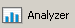

Analyzer is a graphical tool for analyzing statistics generated by a simulation. When a simulation is run from the command line or from Architect, a statistics (.stat) file is created containing the simulation results. The statistics file is a text file which can be opened in any text editor. (See Section 2.3 for the syntax of the statistics file.) Analyzer parses the contents of a statistics file and presents the information graphically. This provides a convenient way to analyze simulation results. While the statistics file contains only per-node and per-interface statistics, Analyzer can also aggregate these metrics and show statistics for a node aggregated over all interfaces of the node and system-wide (scenario-level) statistics. In addition, statistics from two or more statistics files can be analyzed together to compare results from different experiments.
To switch to the Analyzer component of QualNet GUI, click the  button in the toolbar. No statistics files are opened automatically, but you can open and analyze the statistics file for any scenario.
You can also switch to Analyzer after running a scenario in Architect by clicking the button. In this case, the statistics file for the scenario that was run in Architect is automatically opened in Analyzer.